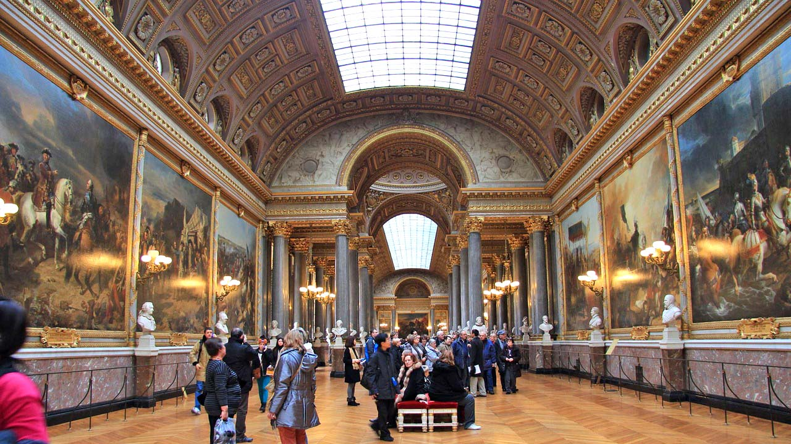
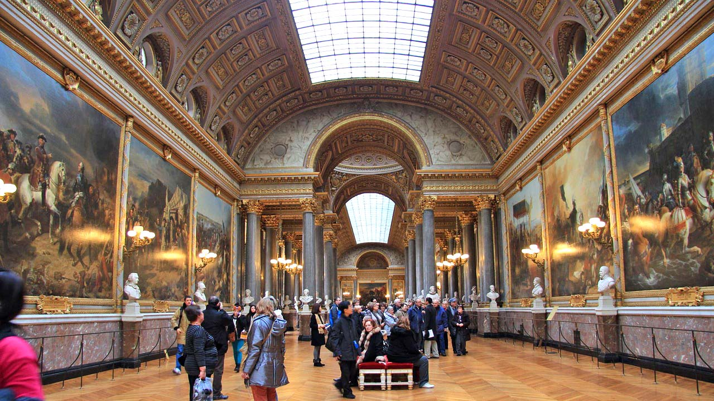

Марију је смрт мужа погодила. Данима је била у агонији. Није се плашила сопствене смрти колико смрти деце.Разболела се.
Након смрти краља пребачена је у нови затвор. Услови су били ригорозни и понижавајући, док је све то посматрао народ уживајући у њеној патњи. Познато је да је у том затвору названа затвореница број 280.
Суђење за Маријину смрт се ближило. Иако није било ни једне оправдане оптужбе, почели су да јој преписују гнусне лажи са којима није имала везе. Злостављање деце, ванбрачна деца ,пљачка дијаманта...
Краљици су у последњем тренутку одлучили унуштити оно мало достојанства. Морала се пресвући пред стражарима који су јој одсекли косу и завезали руке. Краљицу су до гиљотине довезли сељачким кочијама док је пратио ужарени народ довикивајући разне увреде .
Када је излазила из кочије и пењала се на гиљотину једног крвника је згазила и рекла : "Извините није било намерно".
Краљица је окончала живот 16. јуна 1793. године. Сахрањена је у неозначеној гробници.
Године 1815. њено тело је пребачено на традиционално гробље Бурона, цркву Сан-Дениз
 
